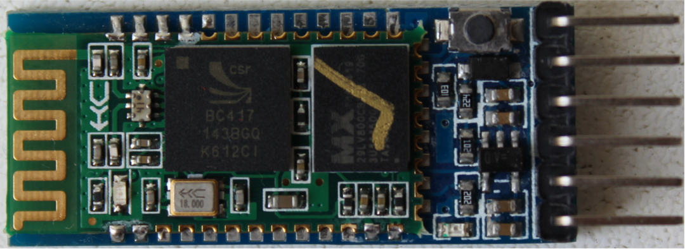
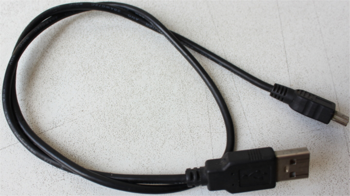
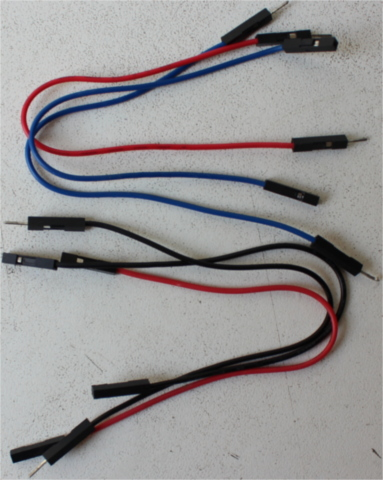

硬件/知识要求
阅读本书的主要知识要求是了解一些Rust。我们很难量化一些，但至少我可以告诉你，你不需要完全理解
泛型， 但你需要知道如何使用闭包。您还需要熟悉2018版的语法，extern crate尤其是在2018版中不需要的事实。
由于嵌入式编程的性质，了解二进制和十六进制值的表示方式以及一些按位运算符的使用也将非常有帮助。 例如，了解以下程序是如何产生输出的，这将很有用。
fn main() { let a = 0x4000_0000 + 0xa2; // Use of the bit shift "<<" operation. let b = 1 << 5; // {:X} will format values as hexadecimal println!("{:X}: {:X}", a, b); }
此外，要遵循此材料，您需要以下硬件：
(某些组件是可选的，但建议使用)
- 一个STM32F3DISCOVERY开发板。
(您可以从"大型"电子产品 供应商或电子商务网站购买此开发板)

- 可选。 3.3V USB <-> 串行模块。详细说明：如果您有发现板的最新版本之一 （鉴于第一个版本是几年前发布的，通常是这种情况），那么您不需要此模块， 因为开发板包含此功能。如果您有较旧版本 的电路板，则需要在第10章和第11章中使用此模块。为完整起见，我们将提供使用串行模块的说明。 这本书将使用这种特定的模式，但你可以使用任何其他模式，只要它在3.3V下运行。您可以从 电子商务网站购买的CH340G模块也可以使用，而且可能更便宜。

- 可选。HC-05蓝牙模块（带标头！）。HC-06也会起作用。
(与其他中国零件一样，你几乎只能在电子商务 网站上找到这些零件。（美国）电子产品供应商通常出于某种原因不库存这些零件)

- 两条mini-B USB电缆。STM32F3DISCOVERY板工作需要一个。另一个仅当您具有串行<-> USB模块时才需要。 确保两条电缆都支持数据传输，因为某些电缆仅支持充电设备。

注意：这些不是几乎所有Android手机都附带的USB电缆；这些是 微型USB电缆。确保你有正确的东西！
- 大部分是可选的。 5根母对母、4根公对母和1根公对公跳线 (AKA Dupont)。 你很可能需要一个母对母线来让ITM工作。只有当您使用USB<-> 串行和蓝牙模块时，才需要其他导线。

FAQ：等等，我为什么需要这个特定的硬件？
这让我和你的生活变得更加轻松。
如果我们不必担心硬件差异，那么这种材料就更容易接近。相信我。
FAQ：我可以用不同的开发板来学习这些材料吗？
大概这主要取决于两件事：您以前使用微控制器的经验和/或是否已经在某个地方为您的开发板提供了像f3这样的高级crate。
如果使用不同的开发板，这篇文章将失去大部分（如果不是全部的话）初学者友好性和"易于理解"性。
如果你有一个不同的开发板，并且你不认为自己完全是初学者，那么最好从快速启动项目模板开始。